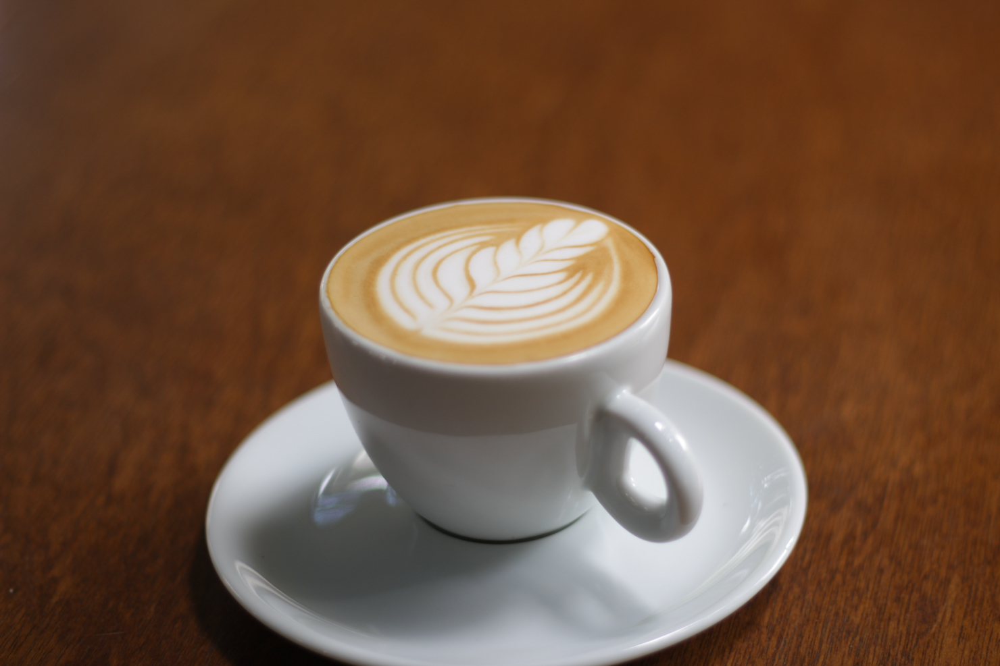

Americano
Ingredients
- 14–18 grams espresso coffee beans
- hot or almost boiling water
- espresso machine
- scale
- grinder
- tamper
How to make
- Measure out your beans for a double shot. Grind them really fine.
- Tamp the beans, then put the portafilter into its spot on the machine.
- Make the espresso.
- Heat up the water to 70-76 degrees Celsius.
- Pour the espresso into the hot water, mix 1 part espresso to 2 parts water.
Lattle

Ingredients
- 2 cups milk
- 1 ⅓ cups hot freshly brewed dark roast espresso coffee
How to make
- Heat milk in a saucepan set over medium-low heat.
- Whisk briskly with a wire whisk to create foam.
- Brew espresso and pour into four cups. Pour in milk, holding back the foam with a spoon. Spoon foam over the top.
Mocha

Ingredients
- 1 cup hot brewed coffee
- 1 tablespoon unsweetened cocoa powder
- 1 tablespoon white sugar
- 2 tablespoons milk
How to make
- Pour hot coffee into a mug.
- Stir in cocoa, sugar, and milk.
Ice Espresso

Ingredients
- Two espresso shots
- Ice cubes
- A splash of water or milk
How to make
- Start brewing your espresso shots using your coffee brewer of choice. I'm using the AeroPress to prepare the espresso shots.
- After brewing the espresso coffee, let it cool slightly. You can add one or two ice cubes to speed up this process.
- Fill a glass with a handful of ice cubes. I like to fill my glass to about halfway, so I'm sure my coffee is nice and cold.
- After cooling the espressos shots, add them to the ice-filled glass.
Cappuccino

Ingredients
- 18g ground espresso (or 1 espresso pod)
- 150ml milk
- cocoa powder (optional)
- the right cup, 200-250ml capacity
How to make
- Make around 35ml espresso using a coffee machine and pour it into the base of your cup.
- Steam the milk with the steamer attachment so that it has around 4-6cm of foam on top.
- Hold the jug so that the spout is about 3-4cm above the cup and pour the milk in steadily.
- As the volume within the cup increases, bring the jug as close to the surface of the drink as possible whilst aiming to pour into the centre.
- Once the milk jug is almost touching the surface of the coffee, tilt the jug to speed up the rate of pour.
- As you accelerate, the milk will hit the back of the cup and start naturally folding in on itself to create a pattern on the top.
- Dust the surface with a little cocoa powder if you like.